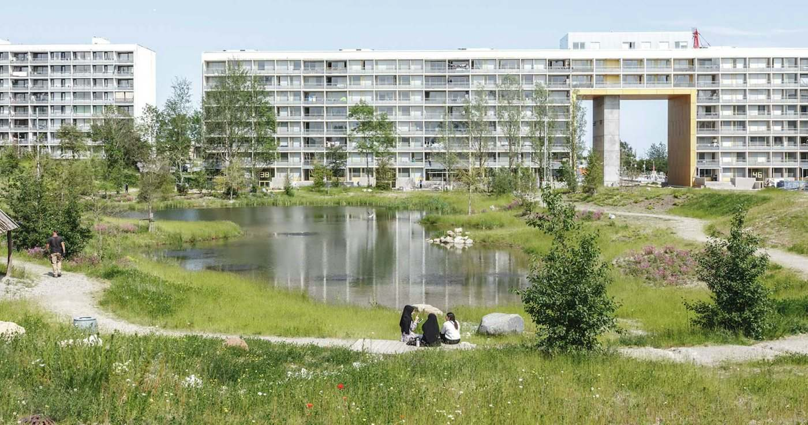
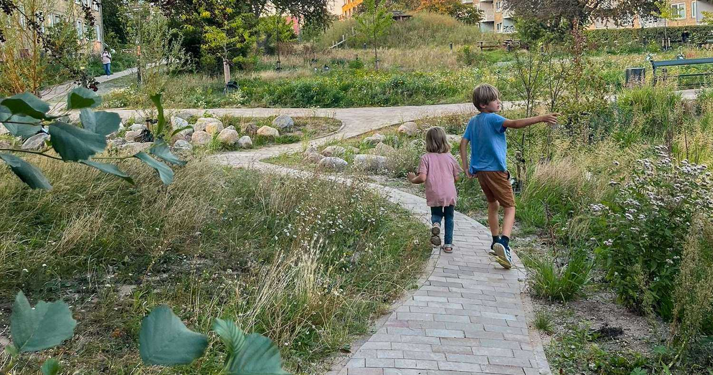
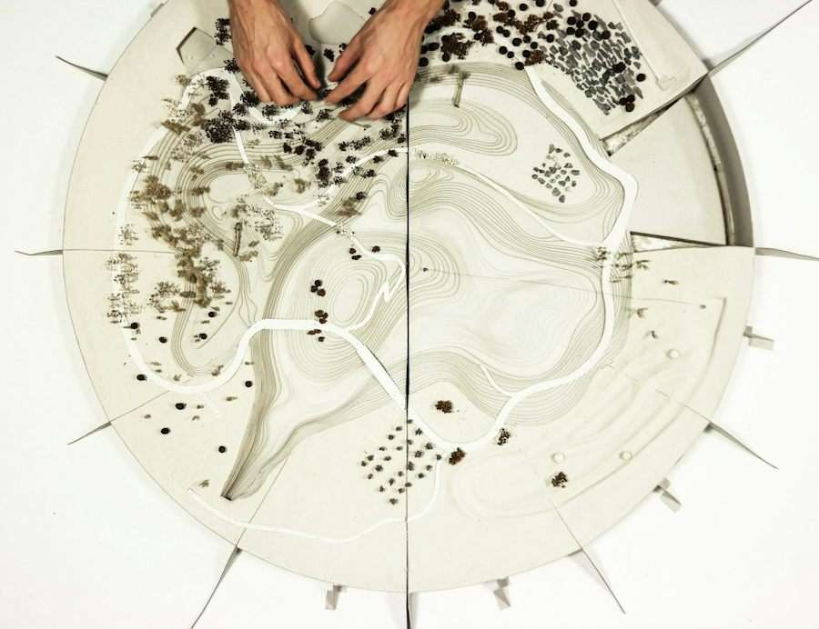
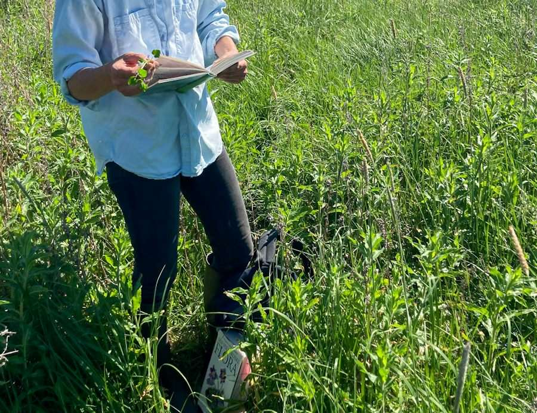
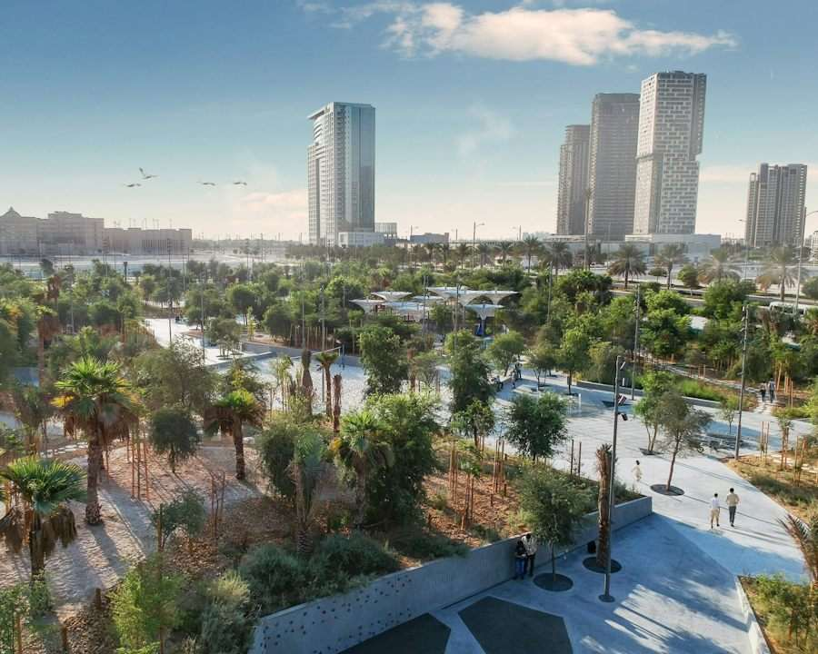
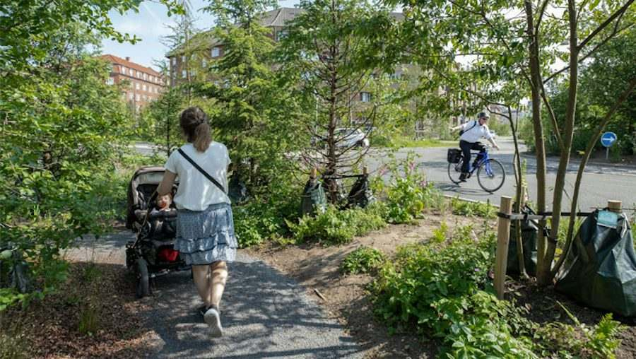
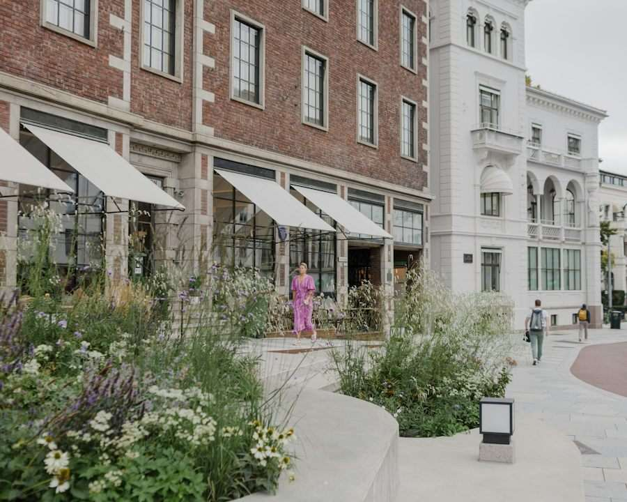

Aarhus, Danmark
Gellerup Nature Park
Natur som gjør et sosialt boligområde om til en komplett bydel.
Naturbasert designstudio · siden 1994
SLA er et internasjonalt anerkjent, naturbasert designstudio. Til sammen er vi 130 landskapsarkitekter, biologer, antropologer og byplanleggere.

Vi tegner byer, offentlige rom og natur i alle skalaer — fra byomfattende masterplaner til lommerparker i nabolaget. Fra København, Aarhus og Oslo arbeider vi med prosjekter i Skandinavia, Europa, Nord-Amerika, Asia og Midtøsten.
Njalsgade 17B, Pakhus 2, 3. sal
2300 København S, Danmark
Mejlgade 55B, 2. sal
8000 Aarhus C, Danmark
Hausmanns gate 6
0186 Oslo, Norge
Henvendelse
Velg hva saken gjelder, hvor du hører til og skriv noen linjer. Du får en kvittering med oppsummeringen og en ferdig adressert e-post til den som faktisk skal svare.
Skissen sender ingenting selv. Kvitteringen åpner en ferdig utfylt e-post i din egen e-postklient, med mottaker, emne og hele oppsummeringen.
Tjenester
SLA leverer fullservice design av offentlige rom og landskap, masterplanlegging, bystrategier og klimatilpasning — og de fagene som må til rundt.
Fra lommerparker, grønne tak og byplasser til biodiversitetsparker og helt nye bydeler.
Masterplaner, strategisk-fysiske utviklingsplaner og rammeplaner for nye bydeler.
Strategier for folk, byer og natur, bygget på 30 års erfaring med samspillet mellom det bygde og det som gror.
Skybrudd, flom, havnivåstigning, tørke og urban varme — gjort om til bedre steder.
Biodiversitetsstrategier, økologiske konsekvensanalyser, biologiske baselines og Biodiversity Net Gain.
Lys og mørke planlagt for mennesker, dyr og planter — med lavt lysnivå og blikket mot nattehimmelen.
I tillegg: medvirkning og antropologiske analyser, naturbasert forvaltning, produktdesign, forskning og formidling.
Tilnærming
Vi mener at et tydelig tverrfaglig arbeid er det som gir levelige og robuste steder. Dyp antropologisk kunnskap og grundig biologisk forskning går sammen med designfaglig håndverk og høye kunstneriske ambisjoner.
Hvert prosjekt begynner med spørsmålet vi stiller oss i SLA: hva ville naturen gjort her?
Vi legger prosjektets biologiske grunnlag, sosiale fundament og fysiske kontekst til grunn.
Vi blander kreativitet og vitenskap og samarbeider på tvers av disipliner for å gi helhetlige svar.
Naturbasert forvaltning gir lavere vedlikeholdskostnader og høyere biodiversitet, og lar stedet utvikle seg med tiden.


Prosjekter
Arbeidene spenner fra klimatilpasning i København og omdanningen av Danmarks største sosialboligområde i Aarhus til urbane biodiversitetsparker i Abu Dhabi.

Aarhus, Danmark
Natur som gjør et sosialt boligområde om til en komplett bydel.

Abu Dhabi, De forente arabiske emirater
Midtøstens første urbane biodiversitetspark.

København, Danmark
Københavns største og grønneste klimatilpasningsprosjekt.

Norge
I Norge omfatter arbeidene Norges nye regjeringskvartal og Sommerrokvartalet i Oslo. Kontoret har org.nr 913 255 682, og Diana Cruz er Head of Norwegian Market.
Send en henvendelseVisjon og oppdrag
«Vi jobber for — og med — de kommende generasjonene.»
Visjonen er å endre verden gjennom naturbaserte designløsninger og bedre livskvaliteten i lokalsamfunn og offentlige rom. Oppdraget er å levere banebrytende, naturbaserte løsninger til nytte for kunder, brukere og naturen selv.
SLA eies av tre seniorpartnere og ti partnere.
Blant utmerkelsene er Arne-prisen fra Danske Arkitekters Landsforbund, og The Pineapples Award for David Crombie Park i Toronto.
SLA ble grunnlagt i 1994 som Stig L. Andersson Landscape Architects og har i dag kontorer i København, Aarhus og Oslo.
Neste steg
Ring Oslo-kontoret på +47 4064 2836, eller send en henvendelse og få kvitteringen med en gang.